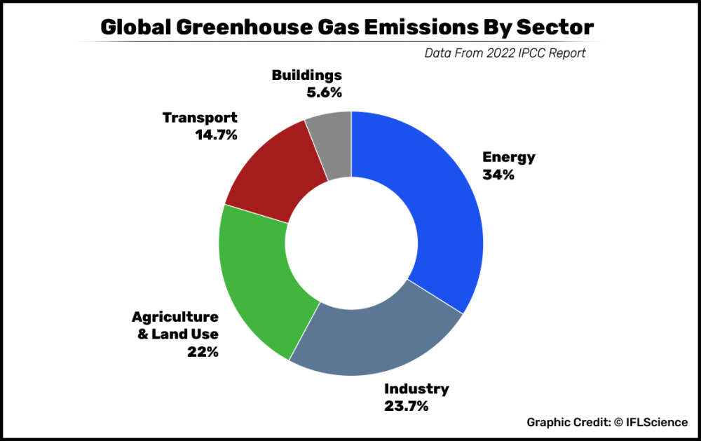

According to the latest IPCC report, agriculture and other land use is the third leading cause of greenhouse gas emissions, behind energy and industry.One recent study suggested that if everyone in the world were to go vegan, and animal agriculture practices were to cease, greenhouse gases would be stabilized for 30 years and 68 percent of carbon dioxide emissions would be offset for the rest of the century.
The article stated above compares CO2e emissions between Vegans, Vegetarian and Omnivores. To find out the answers, BBC Future worked with Sarah Bridle, professor of food, climate and society at the University of York in the UK,and freelance sustainability researcher Rebecca Lait to analyse our food emissions in a two-week experiment.
Going Vegan help reduce Greenhouse emissionsThe above article talks about the effect of following a plant based diet on Greenhouse Emissions.A widely publicised report published by the Worldwatch Institute indicates that 51 per cent of worldwide greenhouse-gas emissions can be attributed to animal agriculture, specifically to cattle, buffalo, sheep, goats, camels and pigs which are raised and killed for food.
What if everyone went VeganWhat if everyone went Vegan ? Well, If every person on Earth adopted a vegan diet – without milk, meat, honey, or any other animal-sourced foods – the greenhouse gas emissions associated with the food system in 2050 would fall by more than half.